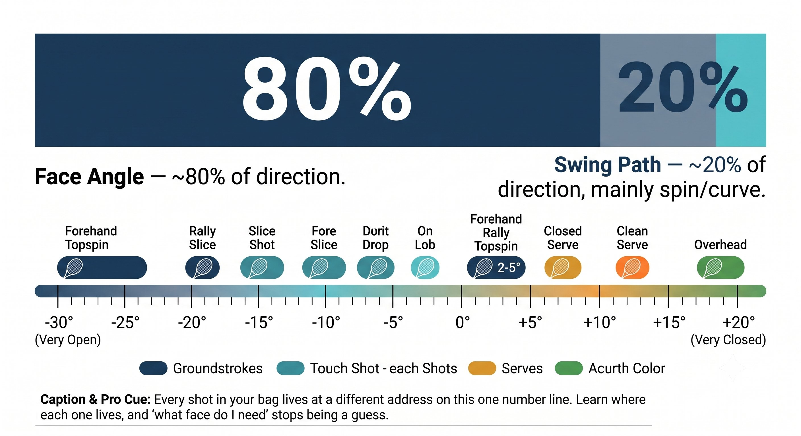
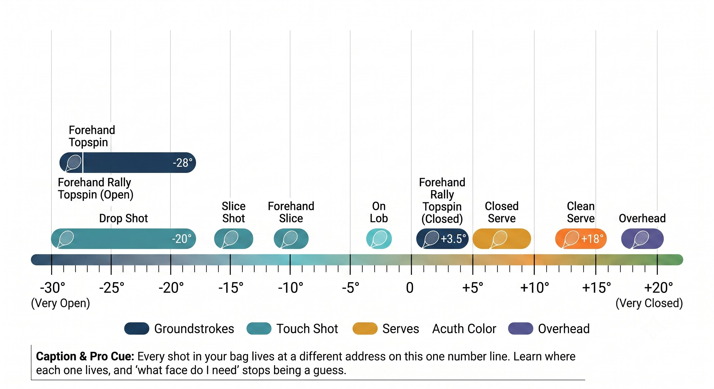
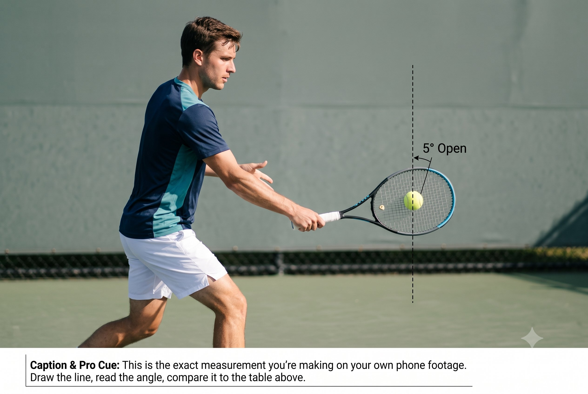
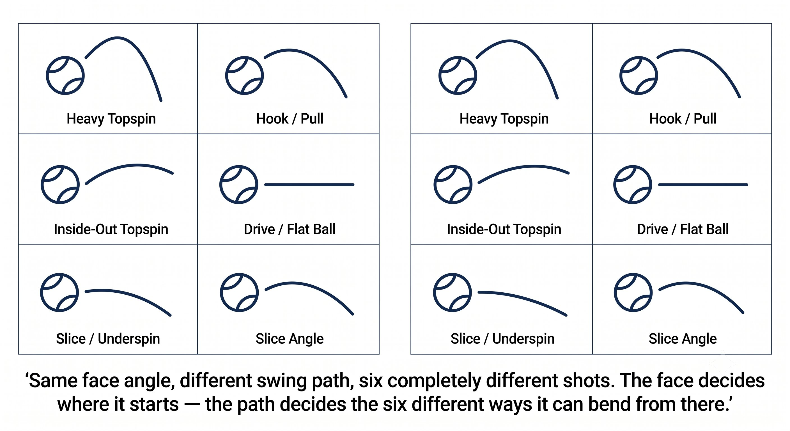

Chapter 4: The Outcome
(English version of Chapter 4 in the United Tennis Handbook)
CHAPTER 4

Figure 1
THE OUTCOME
Racket Face Angle at Impact (Eighty Percent of Direction)
Ball direction is roughly eighty percent face angle and twenty percent swing path. Master the face, and you master where the ball goes.
The face sends it. The path shapes it. But the face decides where it goes.
— Henry Pham
The 80/20 Rule: Face Versus Path
Ball-tracking research — TrackMan, Hawk-Eye, high-speed video — points to the same conclusion again and again:
– Face angle at impact determines roughly 70 to 85 percent of the ball's initial direction.
– Swing path determines the remaining 15 to 30 percent, mainly the spin axis and how much the ball curves.
– Together they create the launch vector, but the face is the dominant partner.
– This holds true for every shot: serve, groundstroke, volley, overhead, return.
Figure 4.1: Everything in this chapter is downstream of this one ratio. Fix the face first — the path is a secondary correction, not the main event.

Figure 2
The Principle
If you want the ball to go somewhere, the face has to point there at impact. Everything else is secondary.
Face Angle Determines Launch Direction
Face angle at impact is the single most predictive variable for where the ball starts its flight.
The Principle
A two-degree change in face angle at contact translates to roughly a one-meter difference in landing spot at the baseline.
Figure 4.2: Two degrees is smaller than you can see with the naked eye. It's also the difference between a ball that clips the line and one that lands a full meter long.

Figure 3
The Three Ways Face Angle Gets Created
We've already covered the first two, in Chapters 2 and 3. The third is a compensation nobody should be relying on:
The Rule
Methods 1 and 2 are your system. Method 3 is a band-aid. If you find yourself using Method 3 regularly, go fix Method 1 or Method 2 instead.
Face Angle by Shot Type
Every shot carries its own required face-angle window at impact.
Figure 4.3: Every shot in your bag lives at a different address on this one number line. Learn where each one lives, and "what face do I need" stops being a guess.

Figure 4
How to Verify Your Face at Impact
You can't actually see your face angle at the moment of contact. But you can verify it indirectly, several ways:
– Ball flight tells the truth: long means you were open, net means you were closed, straight means you were neutral.
– Spin tells the truth: heavy topspin means you were closed, a floating ball means you were open, slice means you were open.
– Contact feel: clean contact means the face matched the path; shock or vibration means the face twisted at impact.
– Video review: 240fps phone video from the side. Freeze it at impact. Measure the face against vertical.
Figure 4.4: This is the exact measurement you're making on your own phone footage. Draw the line, read the angle, compare it to the table above.

Figure 5
– Wall drill: hit against a wall. Ball returns at the same height = neutral face. Returns higher = you were open. Returns lower = you were closed.
Coach's Note
Don't guess. Film ten forehands from the side at 240 frames per second. Freeze the video at impact. Draw a line across the screen to measure the face angle. You'll see the pattern within five minutes.
Face Angle Versus Swing Path: The Curve
Swing path curves the ball after it launches. Face angle is what launches it in the first place.
The Principle
The face launches. The path curves. If the launch is wrong, the curve can't save it.
Figure 4.5: Same face angle, different swing path, six completely different shots. The face decides where it starts — the path decides the six different ways it can bend from there.
The Face Angle Checklist
Face angle at impact = grip baseline + contact point offset + wrist compensation (keep this last term as close to zero as you can).
THE FACE LAUNCHES. THE PATH CURVES. THE FEET POSITION THE CONTACT. THE GRIP SETS THE BASELINE.
Key Takeaways
– Know the required face angle for your shot type (see the table above).
– Choose your grip so your ideal contact point matches the face angle you need.
– Move your feet to bring the ball into that ideal contact zone.
– Keep the wrist passive — let grip and contact point create the face for you.
– Verify through ball flight: long means you were open, net means you were closed, good means you were right.
– If you're regularly using your wrist to fix the face, change your grip or your contact point instead.
Where This Leads
This chapter establishes the Outcome variable in the CORE equation. Chapters 5 and 6 cover the energy system — takeback and tension — that powers the delivery. Chapter 7 integrates court plus ball into required face, then grip plus contact plus takeback plus tension, into the full CORE loop.